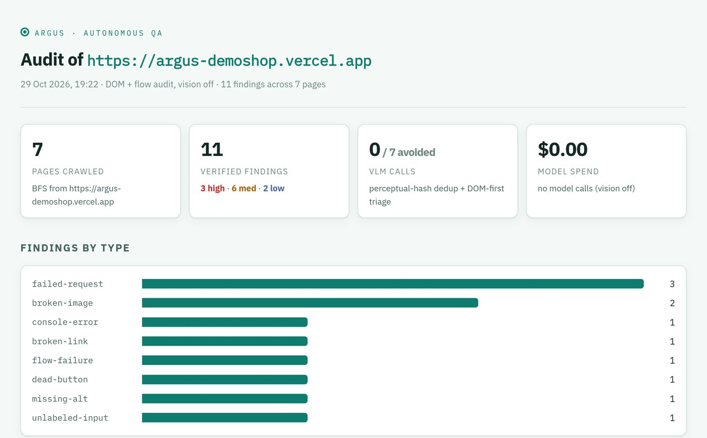

Autonomous QA agent
Give Argus a URL. It crawls every page, fills every form, clicks every button, and writes up what broke with the evidence attached. On the right is a real run against DemoShop, a live store with 11 bugs planted on purpose.
Caught {{CAUGHT}} of {{TOTAL}} planted bugs, raised zero false alarms, and spent $0.00 on models.
Every finding is tied to the page it happened on, a screenshot, a severity, and the check that caught it. Nothing is hidden: claims the verifier rejects stay in, marked as rejected.

A LangGraph state machine. Code catches the mechanical bugs for free; the vision model is only asked about what code cannot see, so runs stay fast and cost nothing.
Crawls the site page by page, logging in first when asked.
Broken links, failed requests, JS errors, accessibility, and pixel drift against a baseline.
Submits every form and clicks every button, then judges what actually happened.
A second agent tries to disprove every visual claim before it reaches the report.
Three problems that shaped the design, and what I did about each.
The vision model reported an "unreadable nav bar" on a page with nothing wrong with it.
A skeptic agent re-examines every visual claim and is told to look for reasons it's wrong. On that page it rejected the claim with the right reasoning.
Rate limits stalled audits for minutes at a time, and paying per call wasn't an option.
Fast failover from Gemini to Groq instead of waiting out a limit, plus perceptual hashing so the same screen is never judged twice.
Long audits on big sites died halfway and lost all their progress.
Every step checkpoints to SQLite. --resume <run> picks up on the exact page the run died on.
It works with no API keys at all, running the code checks and form tests. Add a free Gemini key to turn on the visual audit.